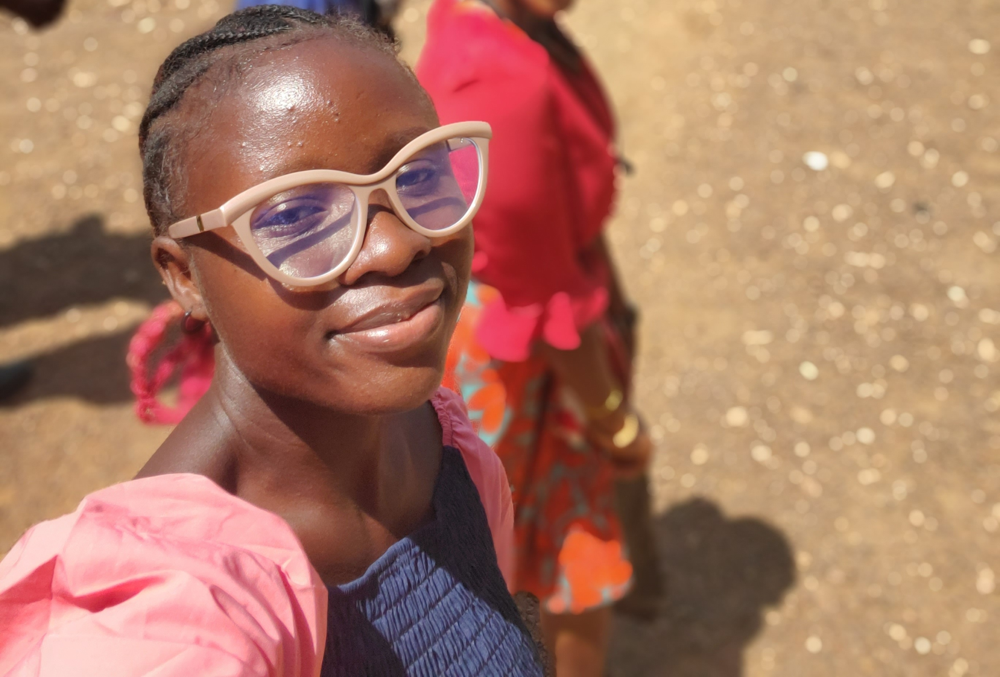

My name is Mariama Tejan Kella. I was born in Sierra Leone and live there with my family. I am passionate about web development and continuously learning new things. I enjoy coding, designing, and solving complex problems. I also love cooking and singing hymns, my favorite hymn being "The Spirit of God."
About Me
Web Dev Resources
West Africa, Sierra Leone
Sierra Leone, a West African nation, is known for its stunning beaches, rich culture, and diamond resources. Its history includes British colonial rule and a devastating civil war (1991–2002). Today, it thrives with diverse ethnic groups, vibrant music, and a growing economy, despite challenges in healthcare and infrastructure development.